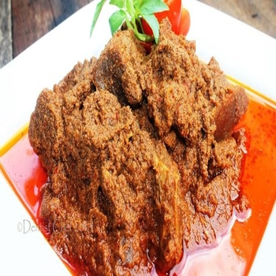
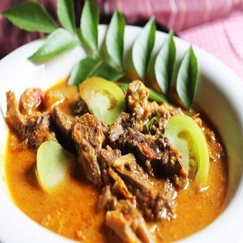

Rendang atau randang adalah masakan daging dengan bumbu rempah-rempah yang berasal dari Minangkabau. Masakan ini dihasilkan dari proses memasak yang dipanaskan berulang-ulang menggunakan santan sampai kuahnya kering sama sekali
Rating : 9.1/10
Rarga : Rp.23000-35000
Ongkos kirim : Rp.5000
Pilihan pengiriman : gofood, grabfood
Sate adalah makanan yang terbuat dari daging yang dipotong kecil-kecil dan ditusuk sedemikian rupa dengan tusukan lidi tulang daun kelapa atau bambu kemudian dipanggang menggunakan bara arang kayu. Sate disajikan dengan berbagai macam bumbu yang bergantung pada variasi resep sate
Rating : 9.5/10
Rarga : Rp.20000-25000
Ongkos kirim : Rp.5000
Pilihan pengiriman : gofood, grabfood
Gulai adalah masakan berbahan baku daging ayam, aneka ikan, kambing, sapi, jeroan, atau sayuran seperti nangka muda dan daun singkong, yang diolah dalam kuah bumbu rempah yang bercitarasa gurih
Rating : 9.2/10
Rarga : Rp.25000-40000
Ongkos kirim : Rp.5000
Pilihan pengiriman : gofood, grabfood